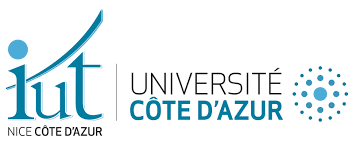
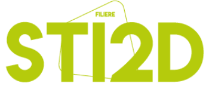

Actuellement en BUT Informatique 3e année en ALTERNANCE
En poste chez Cedrium Informatique a Valbonne


Actuellement en BUT Informatique à l’Université Nice Côte d’Azur, je me spécialise dans la réalisation d’applications : conception, développement et validation. Après une première année entamée à l’Université Gustave Eiffel, j’ai consolidé mon parcours à Nice, où je poursuis désormais mes études en alternance chez Cedrium Informatique.
Passionné par le développement web et logiciel, j’ai eu l’opportunité de travailler sur divers projets concrets, allant de la création complète d’un site web avec gestion de base de données, au développement d’un jeu de plateau numérique en Java avec interface graphique. Mon stage à la CNMSS m’a également permis d’approfondir mes compétences en Java et Spring Boot, en participant à la modernisation d’un programme batch.